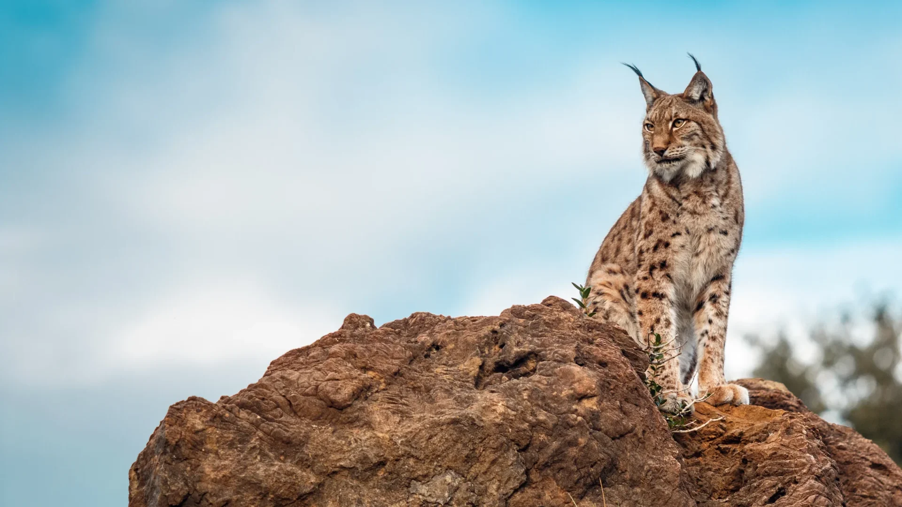
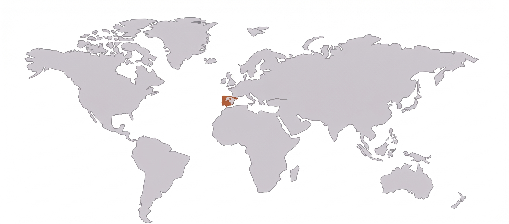

Lince Ibérico
Lynx pardinus
O lince-ibérico (Lynx pardinus) é um dos felinos mais ameaçados do mundo e um verdadeiro símbolo da fauna selvagem da Península Ibérica. Destaca-se pela sua elegância natural, pelagem dourada salpicada de manchas escuras, uma distinta barba facial e orelhas pontiagudas encimadas por pincéis de pelos pretos que potenciam a sua audição. Apesar da sua aparência ágil e de pequeno a médio porte, é um predador feroz e altamente especializado, perfeitamente adaptado para se deslocar com destreza e discrição através dos matagais mediterrónicos e zonas de arbustos densos.
Habitat Natural

O lince-ibérico habita preferencialmente zonas de mato mediterrónico denso e florestas abertas de azinheiras e sobreiros, em áreas montanhosas ou colinas onduladas que lhe oferecem refúgio e locais seguros para a reprodução. Esta espécie depende de forma quase absoluta de refúgios naturais — como formações rochosas, cavidades de árvores ou densos silvados — para se esconder e criar as suas crias longe da perturbação humana. A distribuição da sua área de residência está diretamente ligada à presença e abundância do seu principal recurso alimentar, o coelho-bravo.
Dieta
O lince-ibérico é um carnívoro estrito com uma alimentação altamente especializada. Cerca de 80% a 90% da sua dieta é composta exclusivamente por coelho-bravo. Quando este recurso escasseia, o lince pode ocasionalmente consumir pequenos mamíferos, aves ou ungulados de menor porte, como cabritos selvagens. Esta dependência alimentar torna-o extremamente vulnerável a flutuações nas populações de coelhos. A sua técnica de caça baseia-se na paciência e na emboscada, aproximando-se silenciosamente da presa antes de desferir um bote rápido e letal.
Curiosidades
- O lince-ibérico é considerado o felino mais ameaçado de extinção do planeta, tendo estado à beira da desaparição total no início do século XXI antes de programas de conservação reverterem a tendência.
- Os característicos pincéis de pelo escuro nas pontas das orelhas funcionam como antenas acústicas, ajudando o animal a detetar sons direcionados e a localizar presas na vegetação densa.
- Cada indivíduo possui um padrão único de pintas e manchas no pelo, funcionando quase como uma "impressão digital" que permite aos investigadores identificar cada lince com precisão.
Os nossos Linces Ibéricos
No Zoo Jonçela, dois magníficos linces-ibéricos — o Snoopy e a Ibéria — encantam os visitantes com a sua postura cautelosa e olhar penetrante. Com 5 anos de idade, o Zorzal é um macho ágil e curioso que mede cerca de 90 centímetros de comprimento e pesa 13 kg. A Ibéria, com 4 anos, apresenta uma compleição ligeiramente mais esguia, medindo 85 centímetros e pesando cerca de 10 kg. Ambos partilham um recinto enriquecido que simula o seu habitat natural mediterrónico, onde demonstram toda a discrição, agilidade e instintos típicos da sua espécie.